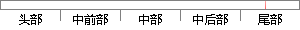

说明，包括系统设置、系统操作 以及 实例测试
片段位置图

相似结果
相似片段：
分析了图像融合时的坐标转换关系，实现完整大图的拼接，最后用户可自行选择对拼接结果进行平滑或者增强与否。 此外还给出了整个系统的详细使用说明，包括系统设置、系统操作、系统默认约定、实例测试、性能指标等等。 7.2 展望 由于时间和条件的限制，再加上作者水平有限，本论文的工作只完成了芯片反向设计流程中的拍照和拼接工作，随着研究
| 对比库： | WriteCheck云资源库 |
| 来源： | www.yangsky.com 查看来源 |
| 发布时间： | 2014-01-18 |
| 相似率 | 88.89% （严重抄袭） |